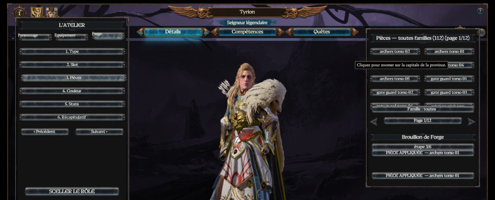
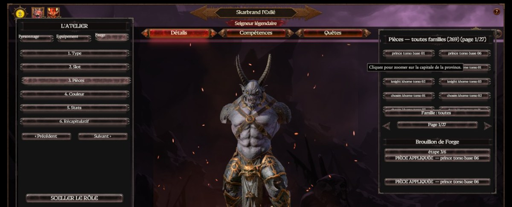
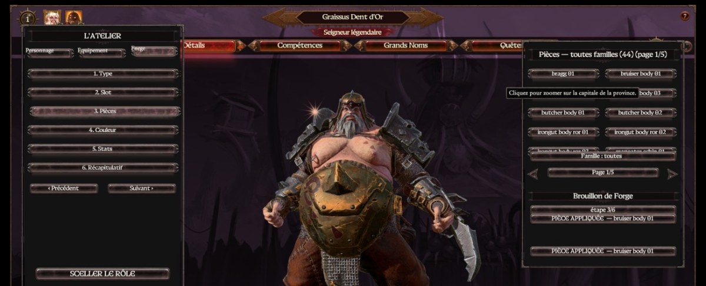

Total War: Warhammer III
Total War hands you an army and a view from the sky. I am after what happens when you drop down to one character, in that same game, without ever leaving the campaign.
Lua and data tables · In development · No date
The bet
Warscape, the Total War engine, is closed: you touch neither the code nor the animations, only data and scripts. Third-person hero control is nowhere in its plans. The whole question is how far you can get with what is left, and where exactly the wall stands. Same name as TOR Fantasy Adventures, same itch, on an engine that has nothing to do with it.
A playable skeleton validated in game in early July 2026: keyboard movement, an over-the-shoulder camera, target lock, a dash and two abilities. It is nothing like a game yet, but it proves the fantasy stands up inside that engine.
No new animation, no mouse aiming, and a good share of what you would need is out of reach. Every limit called for its own solution. They have been found, and they are what makes the list above run.
L'Atelier
The furthest along part of the project is an authoring tool: assembling a hero and their equipment piece by piece, and seeing it immediately. It took several redesigns. It works today: out of roughly twenty thousand pieces catalogued in the game's data, a little over five hundred are usable in the forge.



Screenshots taken in game, July 2026. A working interface, not a finished one.
Honestly
No public build, no date, no promise. I show it here because this is where I do my searching, and because what I do here probably says more about the way I work than a page of skills would. If it ever ships, it will be written on this page.
Fact sheet
A personal, non-commercial project by Pierre Aceituno, made outside the studio. Not affiliated with Games Workshop or Creative Assembly.